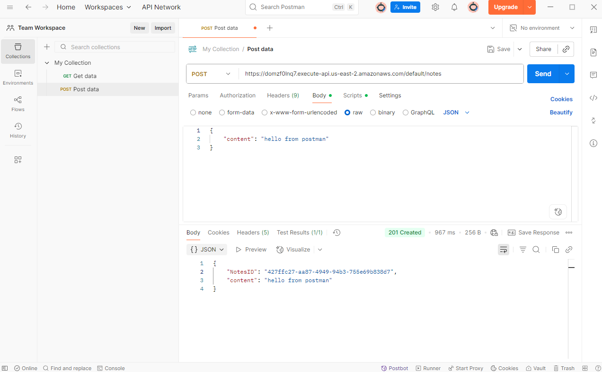
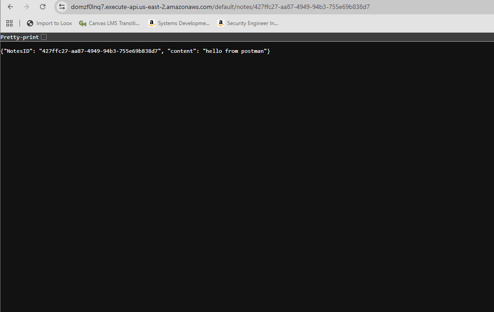
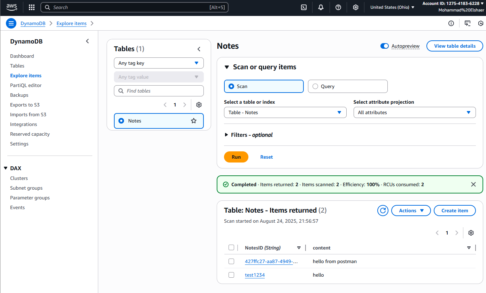
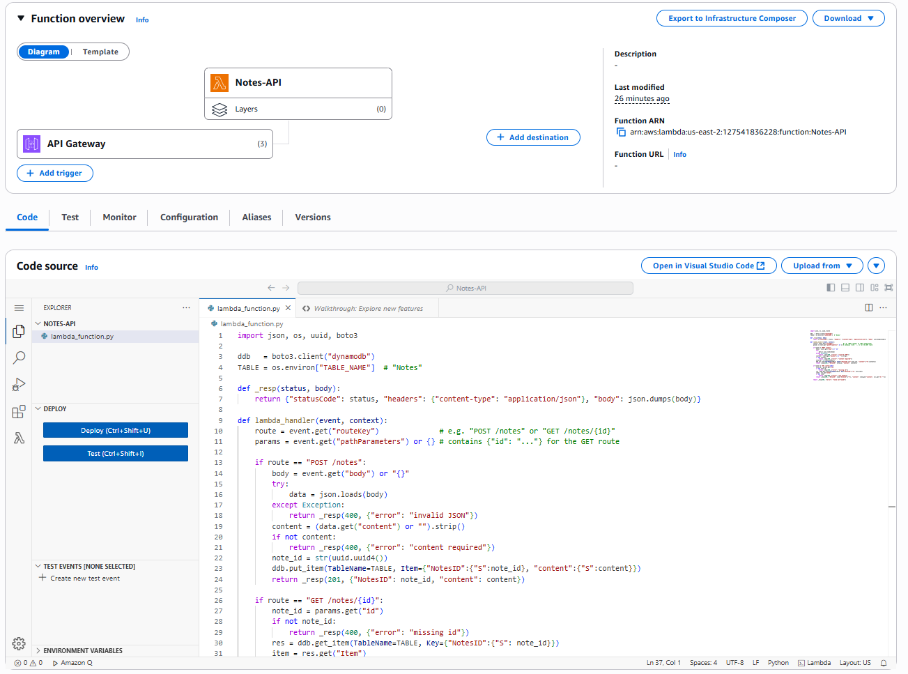
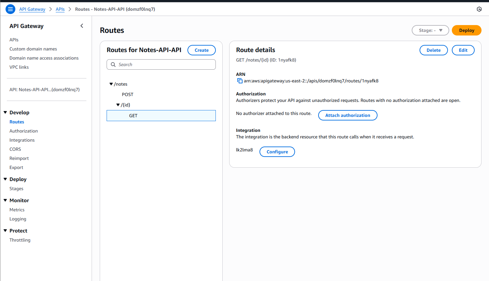

Notes API
Tech Stack: AWS Lambda API Gateway DynamoDB Python
Overview
A serverless REST API supporting create, read, update, and delete operations for notes. API Gateway handles routing/auth, Lambda executes business logic, and DynamoDB stores notes. Designed to be low-cost, scalable, and easy to extend.
Architecture

Screenshots
    Key Features
- Serverless CRUD with AWS Lambda
- Secure, versioned endpoints via API Gateway
- DynamoDB single-table design for fast reads/writes
- Low cost; scales to zero when idle